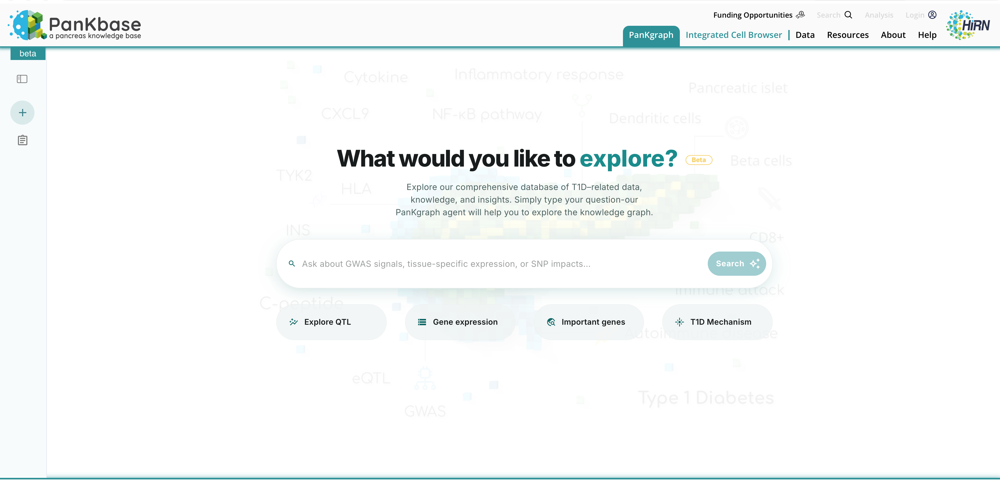
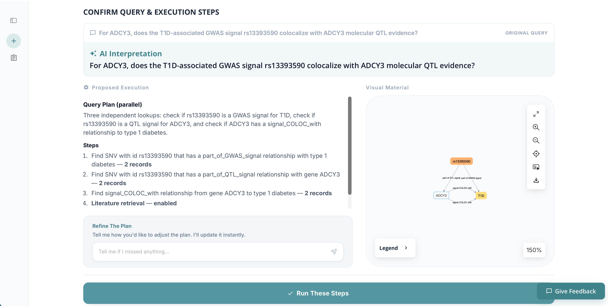
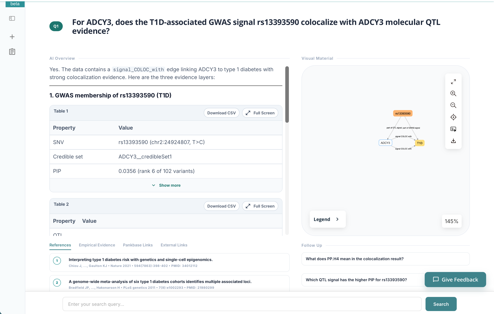
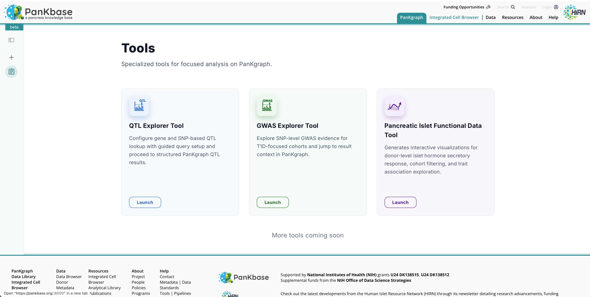
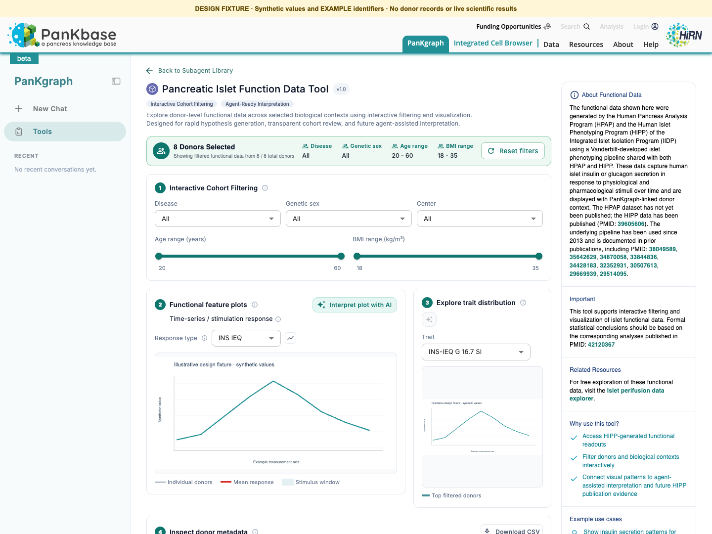

beta
PanKgraph Tutorial
Welcome to PanKgraph, a question-driven data portal for exploring Type 1 Diabetes (T1D) and pancreas biology with human-language search. PanKgraph uses the PanKagent LLM agent to interpret your question, retrieve relevant knowledge graph evidence, and present an answer with provenance from PanKbase and external resources.
This tutorial walks through the latest workflow: ask a question, review the agent's query plan, confirm the analysis, and explore the final evidence-backed result. It also introduces the Tools landing page for experienced users who want faster access to configurable data queries.
Step 1: Ask a Human-Language Question
Start on the PanKgraph landing page. Type a question about T1D or pancreas biology directly into the chat box, then press Enter or click Search.
You can ask your own question, such as:
- For ADCY3, does the T1D-associated GWAS signal rs13393590 colocalize with ADCY3 molecular QTL evidence?
- Which genes are linked to T1D risk through pancreatic islet QTL evidence?
- What evidence connects a gene, variant, pathway, or cell type to T1D?
You can also start from one of the example question buttons, such as Explore QTL, Gene expression, Important genes, or T1D Mechanism.

Step 2: Wait for the Agent to Build a Plan
After you submit the question, PanKagent interprets the request and searches the knowledge graph for the entities, relationships, and source evidence needed to answer it.
This first step usually takes about 10-20 seconds. When it finishes, PanKgraph opens the Confirm Query & Execution Steps page.
Step 3: Review the Plan and Explore the Graph
On the plan confirmation page, you can review how PanKagent understood your question and what steps it proposes to run. The page shows:
- Original query: the question you submitted.
- AI interpretation: the agent's cleaned-up version of the question.
- Proposed execution: the KG lookups and analysis steps the agent plans to run.
- Interactive graph viewer: a preview of the KG query result found by the agent.
You can already explore the graph viewer before running the final analysis. Use it to inspect the entities and relationships that PanKagent found, zoom in or out, open the legend, and confirm that the retrieved graph context matches your question.
If the plan needs adjustment, use the chat box in the Refine The Plan panel to revise it. For example, you can ask the agent to add a gene, remove an evidence type, focus on QTL evidence, or include literature retrieval. If the plan looks correct, click Run These Steps to continue.

Step 4: Wait for the Final Analysis
After you confirm the plan, PanKagent runs the selected graph queries and analyzes the raw results from different resources.
This step may take about 30 seconds while the model filters, organizes, and summarizes the evidence. PanKgraph then opens the final result page.
Step 5: Explore the Final Result
The result page presents the final answer to your question, the supporting tables, the interactive graph, and provenance links.
Key result page areas include:
- AI Overview: a concise answer written from the retrieved graph evidence.
- Evidence tables: structured records used in the answer, with options such as download and full-screen viewing.
- Interactive graph viewer: the KG context used to support the answer.
- References: supporting publications and literature evidence.
- Empirical Evidence: statistical or data-derived evidence from PanKgraph resources.
- PanKbase Links: direct links back to relevant PanKbase records.
- External Links: provenance links to outside databases and resources.
- Follow Up: related questions you can ask next.
Use the references and links to trace the answer back to PanKbase and external sources. This provenance layer is central to PanKgraph's goal of reliable AI: the final response is not only generated by the model, but grounded in knowledge graph evidence.

Step 6: Use Tools for Direct Queries
PanKgraph also includes a Tools landing page for experienced users who want direct, configurable access to key resources without going through the full human-language question workflow.
The Tools page is designed for efficiency. Instead of asking a broad question and waiting for the agent to build a plan, you can launch a focused tool, configure the query inputs, and jump directly into structured results.
Available tools include:
- QTL Explorer Tool: configure gene- and SNP-based QTL lookups and proceed to structured PanKgraph QTL results.
- GWAS Explorer Tool: explore SNP-level GWAS evidence for T1D-focused cohorts and jump to result context in PanKgraph.
- Pancreatic Islet Functional Data Tool: quickly access HIPP pancreatic islet function data with interactive filtering and visualization.

Step 7: Explore Pancreatic Islet Function Data
The Pancreatic Islet Functional Data Tool gives quick access to HIPP pancreatic islet function data. You can filter donors and biological contexts, view functional feature plots, explore trait distributions, and review tool-level context about the data source.
This tool also includes an agent-assisted interpretation action. Click Interpret plot with AI to ask PanKagent to explain the selected feature plot, summarize observed patterns, and connect the visualization to available metadata and evidence.

Design-reference substitution: this synthetic tool example replaces a public tutorial screenshot containing donor identifiers. No real donor records are included.
Tips for Best Results
- Ask specific questions when possible, including gene symbols, variant IDs, evidence types, or biological contexts.
- Use the plan confirmation page to check whether PanKagent understood your intent before running the final analysis.
- Revise the plan if the first interpretation is too broad, too narrow, or missing an evidence type.
- Use references, PanKbase links, and external links to verify provenance and continue deeper analysis.
- Use the Tools page when you already know the resource or query type you want to explore.
PanKgraph helps researchers move from human-language questions to knowledge graph evidence, interpretable results, and traceable provenance for T1D and pancreas biology research.

Supplemental funds from the NIH Office of Data Science Strategies